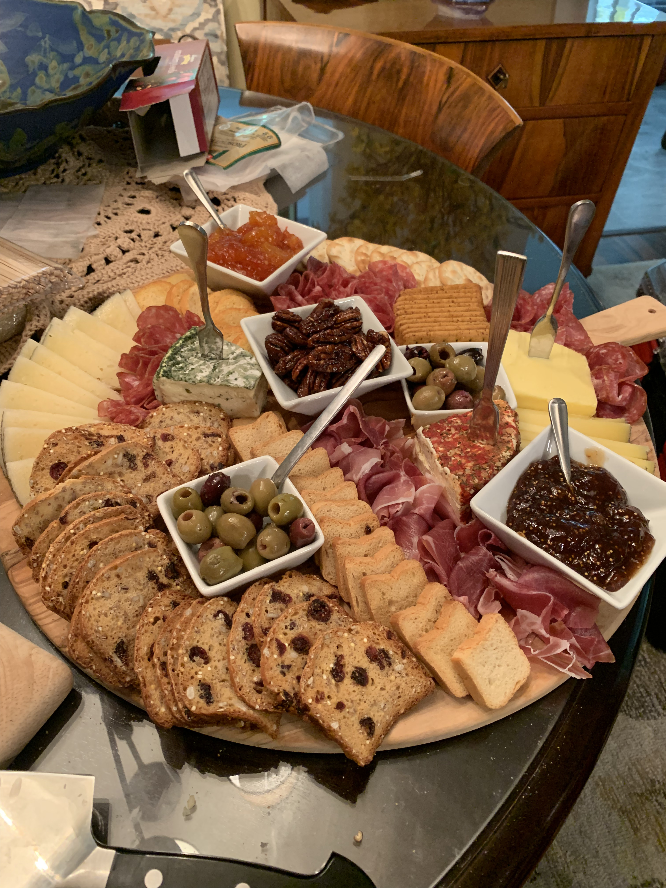
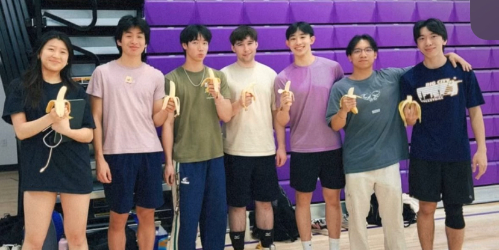
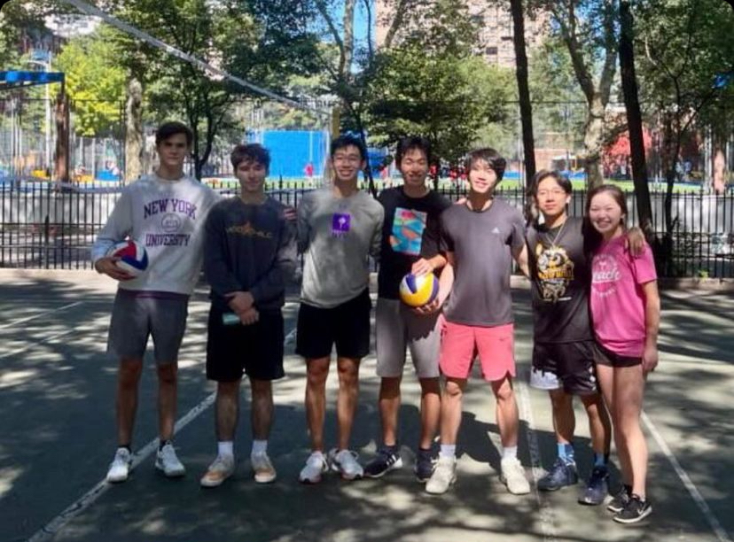
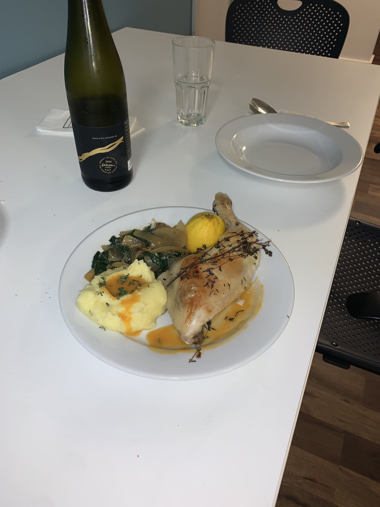
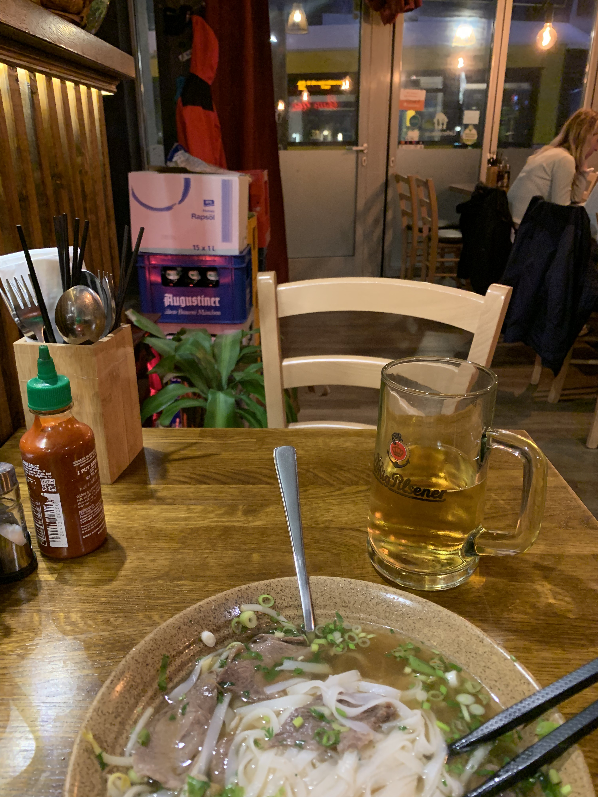
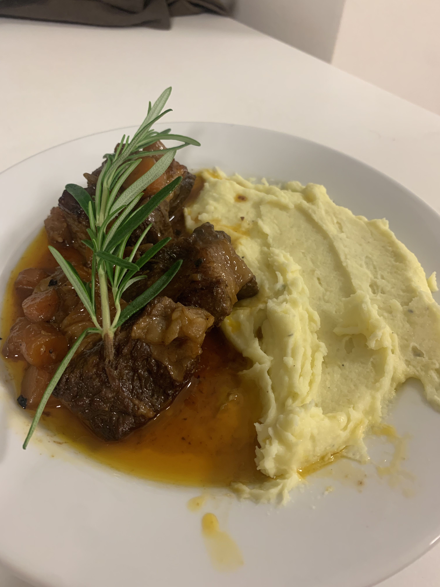
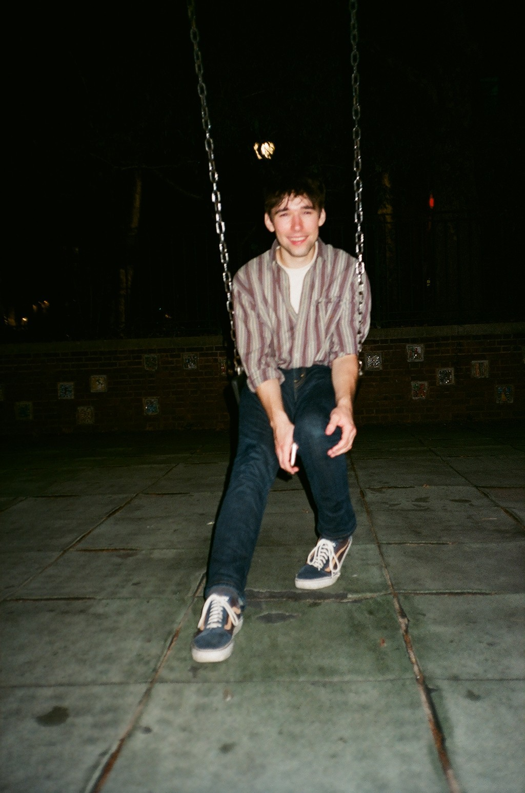

|  |
 |
 |
 |
| June 2024: A charcuterie board that I assembled for a party at my grandmother's. I think it turned out well. |
May 2024: The last season my volleyball team played together in full. |
Spring 2022: The first season my volleyball team played together. |
Fall 2023: More tiny-kitchen Berlin cooking: sesame soy glazed chicken over rice noodles. |
|  |
 |
 |
 |
| Fall 2023: A tasty chicken dinner I made for my friend Cooper. He enjoyed it. |
Fall 2023: A vietnamese restaurant that I was very fond of in Berlin. Very quiet with a nice view of the U-Bahn. |
Fall 2023: Rooftop penguins at the Stralsund Ozeaneum. |
Fall 2023: A nice braised beef with some mashed potatoes that I made in my tiny dorm in Berlin. |
|  |
 |
 |
 |
| Fall 2022: Me on a swing, taken by my talented photographer friend Angela. |
Summer 2022: The view from my bed and breakfast in (I think) Heilbronn. |
Summer 2022: One of my first ever film photos. I was playing with the shutter speed to little success. |
Summer 2022: A similar experiment with indoor lighting. You may recognize the location. |